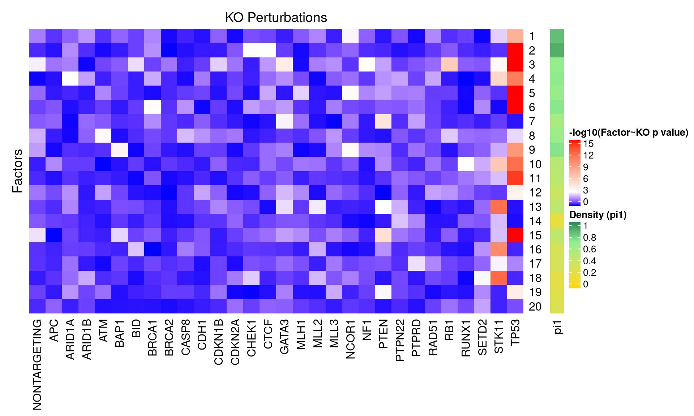
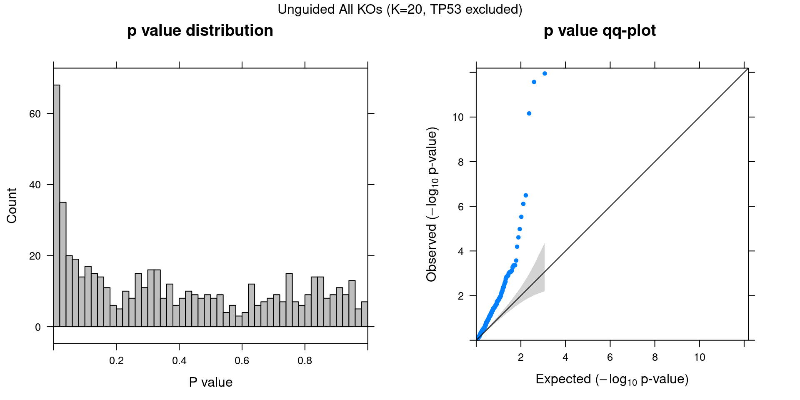

CROP-seq data are from this paper: On the design of CRISPR-based single cell molecular screens, GEO accession: GSE108699.
Perturbations:
Knock-outs of 29 tumor-suppressor genes (TP53, …), 1 non-targeting control.
Cells:
MCF10A cells (normal human breast epithelial cells) with exposure to a DNA damaging agent, doxorubicin.
Only cells with gRNA readout were kept, resulted in 5584 cells.
Genes:
Only genes detected in > 10% of cells were kept, resulted in 8046 genes.
Normalization:
Seurat “LogNormalize”: log(count per 10K + 1).
Library size was regressed out, and the residuals were used as input.
Unguided sparse factor analysis, with \(G\) being 0s.


Genes w/ non-zero loadings vs all genes selected for factor analysis.
GO category: Biological Process.
GO terms that passed overrpresentation analysis fold change \(\geq\) 2 and q value \(<\) 0.05:
| ID | Description | GeneRatio | BgRatio | FoldChange | qvalue |
|---|---|---|---|---|---|
| GO:0050918 | positive chemotaxis | 17/2962 | 19/7132 | 2.15 | 0.00145 |
| GO:1903319 | positive regulation of protein maturation | 13/2962 | 14/7132 | 2.24 | 0.00388 |
| GO:0014014 | negative regulation of gliogenesis | 14/2962 | 16/7132 | 2.11 | 0.00653 |
| GO:0010954 | positive regulation of protein processing | 12/2962 | 13/7132 | 2.22 | 0.00653 |
| GO:2000243 | positive regulation of reproductive process | 12/2962 | 13/7132 | 2.22 | 0.00653 |
| GO:0007215 | glutamate receptor signaling pathway | 15/2962 | 18/7132 | 2.01 | 0.00964 |
| GO:0031581 | hemidesmosome assembly | 11/2962 | 12/7132 | 2.21 | 0.01175 |
| GO:2000273 | positive regulation of signaling receptor activity | 11/2962 | 13/7132 | 2.04 | 0.03332 |
| GO:0045932 | negative regulation of muscle contraction | 9/2962 | 10/7132 | 2.17 | 0.03779 |
| GO:1900115 | extracellular regulation of signal transduction | 9/2962 | 10/7132 | 2.17 | 0.03779 |
| GO:1900116 | extracellular negative regulation of signal transduction | 9/2962 | 10/7132 | 2.17 | 0.03779 |
| GO:2000171 | negative regulation of dendrite development | 9/2962 | 10/7132 | 2.17 | 0.03779 |
| ID | Description | GeneRatio | BgRatio | FoldChange | qvalue |
|---|---|---|---|---|---|
| GO:0006120 | mitochondrial electron transport, NADH to ubiquinone | 39/2766 | 47/7132 | 2.14 | 2.17e-07 |
| GO:0015985 | energy coupled proton transport, down electrochemical gradient | 16/2766 | 20/7132 | 2.06 | 1.22e-02 |
| GO:0015986 | ATP synthesis coupled proton transport | 16/2766 | 20/7132 | 2.06 | 1.22e-02 |
| GO:0015988 | energy coupled proton transmembrane transport, against electrochemical gradient | 16/2766 | 20/7132 | 2.06 | 1.22e-02 |
| GO:0006122 | mitochondrial electron transport, ubiquinol to cytochrome c | 11/2766 | 12/7132 | 2.36 | 1.32e-02 |
| GO:1904816 | positive regulation of protein localization to chromosome, telomeric region | 10/2766 | 11/7132 | 2.34 | 2.72e-02 |
| GO:0071392 | cellular response to estradiol stimulus | 13/2766 | 16/7132 | 2.09 | 3.16e-02 |
| GO:1904814 | regulation of protein localization to chromosome, telomeric region | 11/2766 | 13/7132 | 2.18 | 4.38e-02 |
| ID | Description | GeneRatio | BgRatio | FoldChange | qvalue |
|---|---|---|---|---|---|
| GO:0045047 | protein targeting to ER | 75/2194 | 101/7132 | 2.41 | 6.71e-16 |
| GO:0072599 | establishment of protein localization to endoplasmic reticulum | 76/2194 | 104/7132 | 2.38 | 9.18e-16 |
| GO:0006614 | SRP-dependent cotranslational protein targeting to membrane | 69/2194 | 91/7132 | 2.46 | 9.18e-16 |
| GO:0000184 | nuclear-transcribed mRNA catabolic process, nonsense-mediated decay | 77/2194 | 108/7132 | 2.32 | 3.07e-15 |
| GO:0006613 | cotranslational protein targeting to membrane | 70/2194 | 95/7132 | 2.40 | 4.56e-15 |
| GO:0070972 | protein localization to endoplasmic reticulum | 83/2194 | 122/7132 | 2.21 | 9.97e-15 |
| GO:0006749 | glutathione metabolic process | 19/2194 | 26/7132 | 2.38 | 1.96e-03 |
| GO:0035036 | sperm-egg recognition | 12/2194 | 14/7132 | 2.79 | 5.57e-03 |
| GO:0007339 | binding of sperm to zona pellucida | 10/2194 | 12/7132 | 2.71 | 2.98e-02 |
| GO:0043496 | regulation of protein homodimerization activity | 11/2194 | 14/7132 | 2.55 | 3.41e-02 |
| ID | Description | GeneRatio | BgRatio | FoldChange | qvalue |
|---|---|---|---|---|---|
| GO:0015985 | energy coupled proton transport, down electrochemical gradient | 18/2717 | 20/7132 | 2.36 | 0.000177 |
| GO:0015986 | ATP synthesis coupled proton transport | 18/2717 | 20/7132 | 2.36 | 0.000177 |
| GO:0042776 | mitochondrial ATP synthesis coupled proton transport | 15/2717 | 16/7132 | 2.46 | 0.000363 |
| GO:0007157 | heterophilic cell-cell adhesion via plasma membrane cell adhesion molecules | 10/2717 | 10/7132 | 2.62 | 0.002875 |
| GO:2000811 | negative regulation of anoikis | 9/2717 | 10/7132 | 2.36 | 0.022541 |
| GO:0048662 | negative regulation of smooth muscle cell proliferation | 12/2717 | 15/7132 | 2.10 | 0.023172 |
| GO:0060043 | regulation of cardiac muscle cell proliferation | 12/2717 | 15/7132 | 2.10 | 0.023172 |
| GO:0060038 | cardiac muscle cell proliferation | 13/2717 | 17/7132 | 2.01 | 0.026546 |
| GO:0008210 | estrogen metabolic process | 10/2717 | 12/7132 | 2.19 | 0.029824 |
| GO:0035767 | endothelial cell chemotaxis | 10/2717 | 12/7132 | 2.19 | 0.029824 |
| GO:0090201 | negative regulation of release of cytochrome c from mitochondria | 11/2717 | 14/7132 | 2.06 | 0.036110 |
| ID | Description | GeneRatio | BgRatio | FoldChange | qvalue |
|---|---|---|---|---|---|
| GO:0006614 | SRP-dependent cotranslational protein targeting to membrane | 73/1031 | 91/7132 | 5.55 | 7.01e-42 |
| GO:0045047 | protein targeting to ER | 77/1031 | 101/7132 | 5.27 | 1.11e-41 |
| GO:0072599 | establishment of protein localization to endoplasmic reticulum | 78/1031 | 104/7132 | 5.19 | 1.63e-41 |
| GO:0006613 | cotranslational protein targeting to membrane | 74/1031 | 95/7132 | 5.39 | 2.00e-41 |
| GO:0070972 | protein localization to endoplasmic reticulum | 83/1031 | 122/7132 | 4.71 | 3.75e-39 |
| GO:0000184 | nuclear-transcribed mRNA catabolic process, nonsense-mediated decay | 76/1031 | 108/7132 | 4.87 | 2.21e-37 |
| GO:0006413 | translational initiation | 97/1031 | 168/7132 | 3.99 | 4.47e-37 |
| GO:0006612 | protein targeting to membrane | 79/1031 | 142/7132 | 3.85 | 2.73e-28 |
| GO:0000956 | nuclear-transcribed mRNA catabolic process | 83/1031 | 176/7132 | 3.26 | 3.13e-23 |
| GO:0006402 | mRNA catabolic process | 101/1031 | 246/7132 | 2.84 | 9.60e-23 |
| GO:0006412 | translation | 155/1031 | 496/7132 | 2.16 | 8.47e-21 |
| GO:0006401 | RNA catabolic process | 103/1031 | 268/7132 | 2.66 | 1.27e-20 |
| GO:0090150 | establishment of protein localization to membrane | 91/1031 | 221/7132 | 2.85 | 1.61e-20 |
| GO:0034655 | nucleobase-containing compound catabolic process | 125/1031 | 375/7132 | 2.31 | 4.47e-19 |
| GO:0044270 | cellular nitrogen compound catabolic process | 126/1031 | 385/7132 | 2.26 | 1.72e-18 |
| GO:0046700 | heterocycle catabolic process | 125/1031 | 383/7132 | 2.26 | 3.07e-18 |
| GO:0019439 | aromatic compound catabolic process | 125/1031 | 392/7132 | 2.21 | 2.65e-17 |
| GO:1901361 | organic cyclic compound catabolic process | 126/1031 | 398/7132 | 2.19 | 3.48e-17 |
| GO:0006605 | protein targeting | 105/1031 | 311/7132 | 2.34 | 2.65e-16 |
| GO:0072657 | protein localization to membrane | 113/1031 | 354/7132 | 2.21 | 1.43e-15 |
| GO:0072594 | establishment of protein localization to organelle | 118/1031 | 399/7132 | 2.05 | 1.63e-13 |
| GO:0002181 | cytoplasmic translation | 38/1031 | 78/7132 | 3.37 | 8.79e-11 |
| GO:0009126 | purine nucleoside monophosphate metabolic process | 66/1031 | 206/7132 | 2.22 | 1.03e-08 |
| GO:0009167 | purine ribonucleoside monophosphate metabolic process | 66/1031 | 206/7132 | 2.22 | 1.03e-08 |
| GO:0009161 | ribonucleoside monophosphate metabolic process | 68/1031 | 218/7132 | 2.16 | 1.87e-08 |
| GO:0009123 | nucleoside monophosphate metabolic process | 71/1031 | 232/7132 | 2.12 | 1.87e-08 |
| GO:0046034 | ATP metabolic process | 59/1031 | 178/7132 | 2.29 | 2.14e-08 |
| GO:0009144 | purine nucleoside triphosphate metabolic process | 65/1031 | 206/7132 | 2.18 | 2.58e-08 |
| GO:0009205 | purine ribonucleoside triphosphate metabolic process | 63/1031 | 200/7132 | 2.18 | 5.17e-08 |
| GO:0009141 | nucleoside triphosphate metabolic process | 67/1031 | 220/7132 | 2.11 | 6.93e-08 |
| GO:0009199 | ribonucleoside triphosphate metabolic process | 63/1031 | 205/7132 | 2.13 | 1.49e-07 |
| GO:0006119 | oxidative phosphorylation | 40/1031 | 110/7132 | 2.52 | 8.62e-07 |
| GO:1902600 | proton transmembrane transport | 32/1031 | 83/7132 | 2.67 | 4.73e-06 |
| GO:0045333 | cellular respiration | 45/1031 | 148/7132 | 2.10 | 3.69e-05 |
| GO:0042775 | mitochondrial ATP synthesis coupled electron transport | 29/1031 | 79/7132 | 2.54 | 6.04e-05 |
| GO:0042773 | ATP synthesis coupled electron transport | 29/1031 | 80/7132 | 2.51 | 7.83e-05 |
| GO:0009206 | purine ribonucleoside triphosphate biosynthetic process | 28/1031 | 79/7132 | 2.45 | 1.94e-04 |
| GO:0015985 | energy coupled proton transport, down electrochemical gradient | 12/1031 | 20/7132 | 4.15 | 2.42e-04 |
| GO:0015986 | ATP synthesis coupled proton transport | 12/1031 | 20/7132 | 4.15 | 2.42e-04 |
| GO:0009145 | purine nucleoside triphosphate biosynthetic process | 28/1031 | 80/7132 | 2.42 | 2.42e-04 |
| GO:0022900 | electron transport chain | 41/1031 | 140/7132 | 2.03 | 2.89e-04 |
| GO:0042255 | ribosome assembly | 22/1031 | 56/7132 | 2.72 | 3.04e-04 |
| GO:0009127 | purine nucleoside monophosphate biosynthetic process | 30/1031 | 91/7132 | 2.28 | 4.11e-04 |
| GO:0009168 | purine ribonucleoside monophosphate biosynthetic process | 30/1031 | 91/7132 | 2.28 | 4.11e-04 |
| GO:0009142 | nucleoside triphosphate biosynthetic process | 30/1031 | 92/7132 | 2.26 | 5.00e-04 |
| GO:0022904 | respiratory electron transport chain | 30/1031 | 92/7132 | 2.26 | 5.00e-04 |
| GO:0009201 | ribonucleoside triphosphate biosynthetic process | 28/1031 | 84/7132 | 2.31 | 6.10e-04 |
| GO:0006754 | ATP biosynthetic process | 25/1031 | 71/7132 | 2.44 | 6.10e-04 |
| GO:0009124 | nucleoside monophosphate biosynthetic process | 34/1031 | 112/7132 | 2.10 | 6.89e-04 |
| GO:0009156 | ribonucleoside monophosphate biosynthetic process | 32/1031 | 103/7132 | 2.15 | 7.22e-04 |
| GO:0001732 | formation of cytoplasmic translation initiation complex | 8/1031 | 12/7132 | 4.61 | 3.12e-03 |
| GO:0000028 | ribosomal small subunit assembly | 9/1031 | 15/7132 | 4.15 | 3.37e-03 |
| GO:0009060 | aerobic respiration | 22/1031 | 67/7132 | 2.27 | 6.05e-03 |
| GO:0042776 | mitochondrial ATP synthesis coupled proton transport | 9/1031 | 16/7132 | 3.89 | 6.43e-03 |
| GO:0042407 | cristae formation | 13/1031 | 30/7132 | 3.00 | 6.61e-03 |
| GO:0002183 | cytoplasmic translational initiation | 12/1031 | 27/7132 | 3.07 | 8.76e-03 |
| GO:0006120 | mitochondrial electron transport, NADH to ubiquinone | 17/1031 | 47/7132 | 2.50 | 9.02e-03 |
| GO:0015988 | energy coupled proton transmembrane transport, against electrochemical gradient | 10/1031 | 20/7132 | 3.46 | 9.09e-03 |
| GO:0035036 | sperm-egg recognition | 8/1031 | 14/7132 | 3.95 | 1.21e-02 |
| GO:0006123 | mitochondrial electron transport, cytochrome c to oxygen | 7/1031 | 11/7132 | 4.40 | 1.21e-02 |
| GO:0019646 | aerobic electron transport chain | 7/1031 | 11/7132 | 4.40 | 1.21e-02 |
| GO:0042273 | ribosomal large subunit biogenesis | 21/1031 | 66/7132 | 2.20 | 1.21e-02 |
| GO:0007007 | inner mitochondrial membrane organization | 15/1031 | 41/7132 | 2.53 | 1.61e-02 |
| GO:0010499 | proteasomal ubiquitin-independent protein catabolic process | 9/1031 | 18/7132 | 3.46 | 1.67e-02 |
| GO:0099132 | ATP hydrolysis coupled cation transmembrane transport | 13/1031 | 33/7132 | 2.73 | 1.68e-02 |
| GO:0010257 | NADH dehydrogenase complex assembly | 20/1031 | 64/7132 | 2.16 | 1.89e-02 |
| GO:0032981 | mitochondrial respiratory chain complex I assembly | 20/1031 | 64/7132 | 2.16 | 1.89e-02 |
| GO:0010800 | positive regulation of peptidyl-threonine phosphorylation | 7/1031 | 12/7132 | 4.04 | 2.09e-02 |
| GO:0009409 | response to cold | 10/1031 | 23/7132 | 3.01 | 2.77e-02 |
| GO:0046939 | nucleotide phosphorylation | 16/1031 | 48/7132 | 2.31 | 2.83e-02 |
| GO:0032368 | regulation of lipid transport | 12/1031 | 31/7132 | 2.68 | 2.83e-02 |
| GO:0061844 | antimicrobial humoral immune response mediated by antimicrobial peptide | 8/1031 | 16/7132 | 3.46 | 2.92e-02 |
| GO:0042451 | purine nucleoside biosynthetic process | 8/1031 | 17/7132 | 3.26 | 4.60e-02 |
| GO:0046129 | purine ribonucleoside biosynthetic process | 8/1031 | 17/7132 | 3.26 | 4.60e-02 |
| GO:0006165 | nucleoside diphosphate phosphorylation | 15/1031 | 46/7132 | 2.26 | 4.84e-02 |
| GO:0042274 | ribosomal small subunit biogenesis | 18/1031 | 60/7132 | 2.08 | 4.98e-02 |
| ID | Description | GeneRatio | BgRatio | FoldChange | qvalue |
|---|---|---|---|---|---|
| GO:0061844 | antimicrobial humoral immune response mediated by antimicrobial peptide | 14/2603 | 16/7132 | 2.40 | 0.00339 |
| GO:0046033 | AMP metabolic process | 10/2603 | 11/7132 | 2.49 | 0.01420 |
| GO:0018279 | protein N-linked glycosylation via asparagine | 14/2603 | 19/7132 | 2.02 | 0.03691 |
| GO:0045920 | negative regulation of exocytosis | 10/2603 | 12/7132 | 2.28 | 0.04031 |
| GO:0050829 | defense response to Gram-negative bacterium | 10/2603 | 12/7132 | 2.28 | 0.04031 |
| ID | Description | GeneRatio | BgRatio | FoldChange | qvalue |
|---|---|---|---|---|---|
| GO:0043062 | extracellular structure organization | 74/1727 | 140/7132 | 2.18 | 5.22e-11 |
| GO:0030198 | extracellular matrix organization | 66/1727 | 123/7132 | 2.22 | 3.98e-10 |
| GO:0034330 | cell junction organization | 78/1727 | 159/7132 | 2.03 | 1.13e-09 |
| GO:1904018 | positive regulation of vasculature development | 44/1727 | 70/7132 | 2.60 | 1.13e-09 |
| GO:0034329 | cell junction assembly | 68/1727 | 136/7132 | 2.06 | 6.53e-09 |
| GO:0030216 | keratinocyte differentiation | 48/1727 | 83/7132 | 2.39 | 6.74e-09 |
| GO:0045766 | positive regulation of angiogenesis | 38/1727 | 62/7132 | 2.53 | 5.84e-08 |
| GO:0045047 | protein targeting to ER | 52/1727 | 101/7132 | 2.13 | 2.40e-07 |
| GO:0006614 | SRP-dependent cotranslational protein targeting to membrane | 48/1727 | 91/7132 | 2.18 | 3.07e-07 |
| GO:1901342 | regulation of vasculature development | 56/1727 | 115/7132 | 2.01 | 6.32e-07 |
| GO:0072599 | establishment of protein localization to endoplasmic reticulum | 52/1727 | 104/7132 | 2.06 | 6.70e-07 |
| GO:0009913 | epidermal cell differentiation | 51/1727 | 102/7132 | 2.06 | 8.69e-07 |
| GO:0006613 | cotranslational protein targeting to membrane | 48/1727 | 95/7132 | 2.09 | 1.42e-06 |
| GO:0045765 | regulation of angiogenesis | 51/1727 | 104/7132 | 2.03 | 1.76e-06 |
| GO:0031424 | keratinization | 26/1727 | 40/7132 | 2.68 | 2.93e-06 |
| GO:0007044 | cell-substrate junction assembly | 36/1727 | 67/7132 | 2.22 | 9.26e-06 |
| GO:0045216 | cell-cell junction organization | 36/1727 | 67/7132 | 2.22 | 9.26e-06 |
| GO:0070268 | cornification | 21/1727 | 31/7132 | 2.80 | 1.71e-05 |
| GO:0002685 | regulation of leukocyte migration | 30/1727 | 53/7132 | 2.34 | 1.94e-05 |
| GO:0002687 | positive regulation of leukocyte migration | 25/1727 | 41/7132 | 2.52 | 2.29e-05 |
| GO:1903034 | regulation of response to wounding | 31/1727 | 57/7132 | 2.25 | 3.14e-05 |
| GO:0060326 | cell chemotaxis | 37/1727 | 74/7132 | 2.06 | 3.89e-05 |
| GO:0010634 | positive regulation of epithelial cell migration | 35/1727 | 69/7132 | 2.09 | 4.66e-05 |
| GO:0050921 | positive regulation of chemotaxis | 24/1727 | 42/7132 | 2.36 | 1.25e-04 |
| GO:0097529 | myeloid leukocyte migration | 27/1727 | 50/7132 | 2.23 | 1.33e-04 |
| GO:0001952 | regulation of cell-matrix adhesion | 32/1727 | 64/7132 | 2.06 | 1.54e-04 |
| GO:0050663 | cytokine secretion | 32/1727 | 65/7132 | 2.03 | 2.19e-04 |
| GO:0030856 | regulation of epithelial cell differentiation | 29/1727 | 57/7132 | 2.10 | 2.47e-04 |
| GO:0050707 | regulation of cytokine secretion | 29/1727 | 57/7132 | 2.10 | 2.47e-04 |
| GO:0061041 | regulation of wound healing | 26/1727 | 49/7132 | 2.19 | 2.62e-04 |
| GO:0001659 | temperature homeostasis | 32/1727 | 66/7132 | 2.00 | 3.14e-04 |
| GO:0007043 | cell-cell junction assembly | 28/1727 | 55/7132 | 2.10 | 3.30e-04 |
| GO:0030595 | leukocyte chemotaxis | 28/1727 | 55/7132 | 2.10 | 3.30e-04 |
| GO:0072073 | kidney epithelium development | 23/1727 | 42/7132 | 2.26 | 3.84e-04 |
| GO:0051897 | positive regulation of protein kinase B signaling | 27/1727 | 53/7132 | 2.10 | 4.19e-04 |
| GO:0006953 | acute-phase response | 9/1727 | 10/7132 | 3.72 | 4.19e-04 |
| GO:0086005 | ventricular cardiac muscle cell action potential | 9/1727 | 10/7132 | 3.72 | 4.19e-04 |
| GO:0010595 | positive regulation of endothelial cell migration | 25/1727 | 48/7132 | 2.15 | 4.92e-04 |
| GO:0031581 | hemidesmosome assembly | 10/1727 | 12/7132 | 3.44 | 4.93e-04 |
| GO:0098901 | regulation of cardiac muscle cell action potential | 11/1727 | 14/7132 | 3.24 | 5.06e-04 |
| GO:0043534 | blood vessel endothelial cell migration | 26/1727 | 51/7132 | 2.11 | 5.32e-04 |
| GO:0090101 | negative regulation of transmembrane receptor protein serine/threonine kinase signaling pathway | 26/1727 | 51/7132 | 2.11 | 5.32e-04 |
| GO:1901888 | regulation of cell junction assembly | 26/1727 | 51/7132 | 2.11 | 5.32e-04 |
| GO:0046688 | response to copper ion | 15/1727 | 23/7132 | 2.69 | 5.92e-04 |
| GO:0002690 | positive regulation of leukocyte chemotaxis | 17/1727 | 28/7132 | 2.51 | 6.69e-04 |
| GO:0002688 | regulation of leukocyte chemotaxis | 19/1727 | 33/7132 | 2.38 | 6.69e-04 |
| GO:0006937 | regulation of muscle contraction | 25/1727 | 49/7132 | 2.11 | 6.85e-04 |
| GO:0035088 | establishment or maintenance of apical/basal cell polarity | 14/1727 | 21/7132 | 2.75 | 7.06e-04 |
| GO:0061245 | establishment or maintenance of bipolar cell polarity | 14/1727 | 21/7132 | 2.75 | 7.06e-04 |
| GO:0006942 | regulation of striated muscle contraction | 18/1727 | 31/7132 | 2.40 | 8.58e-04 |
| GO:0050918 | positive chemotaxis | 13/1727 | 19/7132 | 2.83 | 8.67e-04 |
| GO:0002526 | acute inflammatory response | 21/1727 | 39/7132 | 2.22 | 9.50e-04 |
| GO:0055117 | regulation of cardiac muscle contraction | 17/1727 | 29/7132 | 2.42 | 1.11e-03 |
| GO:0018149 | peptide cross-linking | 11/1727 | 15/7132 | 3.03 | 1.18e-03 |
| GO:0006690 | icosanoid metabolic process | 20/1727 | 37/7132 | 2.23 | 1.22e-03 |
| GO:0071280 | cellular response to copper ion | 9/1727 | 11/7132 | 3.38 | 1.30e-03 |
| GO:0033619 | membrane protein proteolysis | 18/1727 | 32/7132 | 2.32 | 1.34e-03 |
| GO:0071349 | cellular response to interleukin-12 | 18/1727 | 32/7132 | 2.32 | 1.34e-03 |
| GO:0071621 | granulocyte chemotaxis | 16/1727 | 27/7132 | 2.45 | 1.39e-03 |
| GO:0031214 | biomineral tissue development | 22/1727 | 43/7132 | 2.11 | 1.52e-03 |
| GO:0010812 | negative regulation of cell-substrate adhesion | 19/1727 | 35/7132 | 2.24 | 1.58e-03 |
| GO:0034113 | heterotypic cell-cell adhesion | 13/1727 | 20/7132 | 2.68 | 1.62e-03 |
| GO:0002367 | cytokine production involved in immune response | 17/1727 | 30/7132 | 2.34 | 1.70e-03 |
| GO:0032612 | interleukin-1 production | 17/1727 | 30/7132 | 2.34 | 1.70e-03 |
| GO:0035722 | interleukin-12-mediated signaling pathway | 17/1727 | 30/7132 | 2.34 | 1.70e-03 |
| GO:0070830 | bicellular tight junction assembly | 17/1727 | 30/7132 | 2.34 | 1.70e-03 |
| GO:1903035 | negative regulation of response to wounding | 17/1727 | 30/7132 | 2.34 | 1.70e-03 |
| GO:2000106 | regulation of leukocyte apoptotic process | 15/1727 | 25/7132 | 2.48 | 1.73e-03 |
| GO:0030512 | negative regulation of transforming growth factor beta receptor signaling pathway | 20/1727 | 38/7132 | 2.17 | 1.73e-03 |
| GO:0051893 | regulation of focal adhesion assembly | 20/1727 | 38/7132 | 2.17 | 1.73e-03 |
| GO:0071887 | leukocyte apoptotic process | 20/1727 | 38/7132 | 2.17 | 1.73e-03 |
| GO:0090109 | regulation of cell-substrate junction assembly | 20/1727 | 38/7132 | 2.17 | 1.73e-03 |
| GO:0070671 | response to interleukin-12 | 18/1727 | 33/7132 | 2.25 | 1.99e-03 |
| GO:0001823 | mesonephros development | 16/1727 | 28/7132 | 2.36 | 2.15e-03 |
| GO:0033627 | cell adhesion mediated by integrin | 16/1727 | 28/7132 | 2.36 | 2.15e-03 |
| GO:0061045 | negative regulation of wound healing | 16/1727 | 28/7132 | 2.36 | 2.15e-03 |
| GO:0072006 | nephron development | 20/1727 | 39/7132 | 2.12 | 2.50e-03 |
| GO:1903845 | negative regulation of cellular response to transforming growth factor beta stimulus | 20/1727 | 39/7132 | 2.12 | 2.50e-03 |
| GO:0045840 | positive regulation of mitotic nuclear division | 17/1727 | 31/7132 | 2.26 | 2.51e-03 |
| GO:0097530 | granulocyte migration | 17/1727 | 31/7132 | 2.26 | 2.51e-03 |
| GO:0120192 | tight junction assembly | 17/1727 | 31/7132 | 2.26 | 2.51e-03 |
| GO:1903391 | regulation of adherens junction organization | 21/1727 | 42/7132 | 2.06 | 2.65e-03 |
| GO:0033628 | regulation of cell adhesion mediated by integrin | 13/1727 | 21/7132 | 2.56 | 2.69e-03 |
| GO:0001657 | ureteric bud development | 15/1727 | 26/7132 | 2.38 | 2.69e-03 |
| GO:0070167 | regulation of biomineral tissue development | 15/1727 | 26/7132 | 2.38 | 2.69e-03 |
| GO:0035767 | endothelial cell chemotaxis | 9/1727 | 12/7132 | 3.10 | 2.97e-03 |
| GO:0086002 | cardiac muscle cell action potential involved in contraction | 9/1727 | 12/7132 | 3.10 | 2.97e-03 |
| GO:0002028 | regulation of sodium ion transport | 19/1727 | 37/7132 | 2.12 | 3.08e-03 |
| GO:0043297 | apical junction assembly | 19/1727 | 37/7132 | 2.12 | 3.08e-03 |
| GO:0050728 | negative regulation of inflammatory response | 19/1727 | 37/7132 | 2.12 | 3.08e-03 |
| GO:0086091 | regulation of heart rate by cardiac conduction | 8/1727 | 10/7132 | 3.30 | 3.11e-03 |
| GO:0032623 | interleukin-2 production | 16/1727 | 29/7132 | 2.28 | 3.11e-03 |
| GO:0030593 | neutrophil chemotaxis | 12/1727 | 19/7132 | 2.61 | 3.23e-03 |
| GO:0045197 | establishment or maintenance of epithelial cell apical/basal polarity | 12/1727 | 19/7132 | 2.61 | 3.23e-03 |
| GO:0070228 | regulation of lymphocyte apoptotic process | 12/1727 | 19/7132 | 2.61 | 3.23e-03 |
| GO:0086001 | cardiac muscle cell action potential | 12/1727 | 19/7132 | 2.61 | 3.23e-03 |
| GO:0098900 | regulation of action potential | 12/1727 | 19/7132 | 2.61 | 3.23e-03 |
| GO:0010717 | regulation of epithelial to mesenchymal transition | 20/1727 | 40/7132 | 2.06 | 3.28e-03 |
| GO:0120193 | tight junction organization | 17/1727 | 32/7132 | 2.19 | 3.54e-03 |
| GO:0072163 | mesonephric epithelium development | 15/1727 | 27/7132 | 2.29 | 3.96e-03 |
| GO:0072164 | mesonephric tubule development | 15/1727 | 27/7132 | 2.29 | 3.96e-03 |
| GO:0032350 | regulation of hormone metabolic process | 11/1727 | 17/7132 | 2.67 | 3.96e-03 |
| GO:0019730 | antimicrobial humoral response | 13/1727 | 22/7132 | 2.44 | 4.22e-03 |
| GO:0032637 | interleukin-8 production | 13/1727 | 22/7132 | 2.44 | 4.22e-03 |
| GO:0042035 | regulation of cytokine biosynthetic process | 16/1727 | 30/7132 | 2.20 | 4.61e-03 |
| GO:0072091 | regulation of stem cell proliferation | 16/1727 | 30/7132 | 2.20 | 4.61e-03 |
| GO:0090183 | regulation of kidney development | 10/1727 | 15/7132 | 2.75 | 5.00e-03 |
| GO:0042089 | cytokine biosynthetic process | 17/1727 | 33/7132 | 2.13 | 5.08e-03 |
| GO:0042107 | cytokine metabolic process | 17/1727 | 33/7132 | 2.13 | 5.08e-03 |
| GO:0033273 | response to vitamin | 19/1727 | 39/7132 | 2.01 | 6.00e-03 |
| GO:0070229 | negative regulation of lymphocyte apoptotic process | 9/1727 | 13/7132 | 2.86 | 6.07e-03 |
| GO:1905517 | macrophage migration | 9/1727 | 13/7132 | 2.86 | 6.07e-03 |
| GO:0001954 | positive regulation of cell-matrix adhesion | 15/1727 | 28/7132 | 2.21 | 6.07e-03 |
| GO:0032652 | regulation of interleukin-1 production | 15/1727 | 28/7132 | 2.21 | 6.07e-03 |
| GO:0072009 | nephron epithelium development | 16/1727 | 31/7132 | 2.13 | 6.75e-03 |
| GO:0009409 | response to cold | 13/1727 | 23/7132 | 2.33 | 6.75e-03 |
| GO:0046717 | acid secretion | 13/1727 | 23/7132 | 2.33 | 6.75e-03 |
| GO:1990266 | neutrophil migration | 13/1727 | 23/7132 | 2.33 | 6.75e-03 |
| GO:0050710 | negative regulation of cytokine secretion | 11/1727 | 18/7132 | 2.52 | 6.97e-03 |
| GO:1901890 | positive regulation of cell junction assembly | 11/1727 | 18/7132 | 2.52 | 6.97e-03 |
| GO:0009162 | deoxyribonucleoside monophosphate metabolic process | 8/1727 | 11/7132 | 3.00 | 7.09e-03 |
| GO:0046632 | alpha-beta T cell differentiation | 17/1727 | 34/7132 | 2.06 | 7.27e-03 |
| GO:0051785 | positive regulation of nuclear division | 17/1727 | 34/7132 | 2.06 | 7.27e-03 |
| GO:0061337 | cardiac conduction | 17/1727 | 34/7132 | 2.06 | 7.27e-03 |
| GO:0002260 | lymphocyte homeostasis | 14/1727 | 26/7132 | 2.22 | 7.97e-03 |
| GO:0032677 | regulation of interleukin-8 production | 12/1727 | 21/7132 | 2.36 | 8.66e-03 |
| GO:0070227 | lymphocyte apoptotic process | 15/1727 | 29/7132 | 2.14 | 8.66e-03 |
| GO:0050873 | brown fat cell differentiation | 10/1727 | 16/7132 | 2.58 | 8.66e-03 |
| GO:0086003 | cardiac muscle cell contraction | 10/1727 | 16/7132 | 2.58 | 8.66e-03 |
| GO:0086004 | regulation of cardiac muscle cell contraction | 10/1727 | 16/7132 | 2.58 | 8.66e-03 |
| GO:1990868 | response to chemokine | 10/1727 | 16/7132 | 2.58 | 8.66e-03 |
| GO:1990869 | cellular response to chemokine | 10/1727 | 16/7132 | 2.58 | 8.66e-03 |
| GO:2000107 | negative regulation of leukocyte apoptotic process | 10/1727 | 16/7132 | 2.58 | 8.66e-03 |
| GO:0001776 | leukocyte homeostasis | 16/1727 | 32/7132 | 2.06 | 9.37e-03 |
| GO:0032663 | regulation of interleukin-2 production | 13/1727 | 24/7132 | 2.24 | 1.02e-02 |
| GO:0043537 | negative regulation of blood vessel endothelial cell migration | 9/1727 | 14/7132 | 2.65 | 1.11e-02 |
| GO:0099601 | regulation of neurotransmitter receptor activity | 9/1727 | 14/7132 | 2.65 | 1.11e-02 |
| GO:0030858 | positive regulation of epithelial cell differentiation | 11/1727 | 19/7132 | 2.39 | 1.13e-02 |
| GO:0031112 | positive regulation of microtubule polymerization or depolymerization | 11/1727 | 19/7132 | 2.39 | 1.13e-02 |
| GO:0045687 | positive regulation of glial cell differentiation | 11/1727 | 19/7132 | 2.39 | 1.13e-02 |
| GO:0002027 | regulation of heart rate | 14/1727 | 27/7132 | 2.14 | 1.13e-02 |
| GO:0043094 | cellular metabolic compound salvage | 14/1727 | 27/7132 | 2.14 | 1.13e-02 |
| GO:0048146 | positive regulation of fibroblast proliferation | 14/1727 | 27/7132 | 2.14 | 1.13e-02 |
| GO:0061326 | renal tubule development | 14/1727 | 27/7132 | 2.14 | 1.13e-02 |
| GO:0001885 | endothelial cell development | 15/1727 | 30/7132 | 2.06 | 1.23e-02 |
| GO:0070252 | actin-mediated cell contraction | 15/1727 | 30/7132 | 2.06 | 1.23e-02 |
| GO:0099132 | ATP hydrolysis coupled cation transmembrane transport | 16/1727 | 33/7132 | 2.00 | 1.31e-02 |
| GO:0002718 | regulation of cytokine production involved in immune response | 12/1727 | 22/7132 | 2.25 | 1.33e-02 |
| GO:0035987 | endodermal cell differentiation | 12/1727 | 22/7132 | 2.25 | 1.33e-02 |
| GO:0042116 | macrophage activation | 12/1727 | 22/7132 | 2.25 | 1.33e-02 |
| GO:0009263 | deoxyribonucleotide biosynthetic process | 8/1727 | 12/7132 | 2.75 | 1.37e-02 |
| GO:0048246 | macrophage chemotaxis | 8/1727 | 12/7132 | 2.75 | 1.37e-02 |
| GO:0050892 | intestinal absorption | 8/1727 | 12/7132 | 2.75 | 1.37e-02 |
| GO:0070098 | chemokine-mediated signaling pathway | 8/1727 | 12/7132 | 2.75 | 1.37e-02 |
| GO:0072678 | T cell migration | 8/1727 | 12/7132 | 2.75 | 1.37e-02 |
| GO:0030195 | negative regulation of blood coagulation | 10/1727 | 17/7132 | 2.43 | 1.43e-02 |
| GO:0031116 | positive regulation of microtubule polymerization | 10/1727 | 17/7132 | 2.43 | 1.43e-02 |
| GO:0090162 | establishment of epithelial cell polarity | 10/1727 | 17/7132 | 2.43 | 1.43e-02 |
| GO:1900047 | negative regulation of hemostasis | 10/1727 | 17/7132 | 2.43 | 1.43e-02 |
| GO:1903115 | regulation of actin filament-based movement | 10/1727 | 17/7132 | 2.43 | 1.43e-02 |
| GO:0002042 | cell migration involved in sprouting angiogenesis | 13/1727 | 25/7132 | 2.15 | 1.46e-02 |
| GO:0030279 | negative regulation of ossification | 13/1727 | 25/7132 | 2.15 | 1.46e-02 |
| GO:0032611 | interleukin-1 beta production | 13/1727 | 25/7132 | 2.15 | 1.46e-02 |
| GO:0043536 | positive regulation of blood vessel endothelial cell migration | 13/1727 | 25/7132 | 2.15 | 1.46e-02 |
| GO:0030282 | bone mineralization | 14/1727 | 28/7132 | 2.06 | 1.59e-02 |
| GO:0110110 | positive regulation of animal organ morphogenesis | 14/1727 | 28/7132 | 2.06 | 1.59e-02 |
| GO:0010839 | negative regulation of keratinocyte proliferation | 7/1727 | 10/7132 | 2.89 | 1.65e-02 |
| GO:0042730 | fibrinolysis | 7/1727 | 10/7132 | 2.89 | 1.65e-02 |
| GO:0061684 | chaperone-mediated autophagy | 7/1727 | 10/7132 | 2.89 | 1.65e-02 |
| GO:2000811 | negative regulation of anoikis | 7/1727 | 10/7132 | 2.89 | 1.65e-02 |
| GO:0015988 | energy coupled proton transmembrane transport, against electrochemical gradient | 11/1727 | 20/7132 | 2.27 | 1.68e-02 |
| GO:0030500 | regulation of bone mineralization | 11/1727 | 20/7132 | 2.27 | 1.68e-02 |
| GO:0043616 | keratinocyte proliferation | 11/1727 | 20/7132 | 2.27 | 1.68e-02 |
| GO:0070231 | T cell apoptotic process | 11/1727 | 20/7132 | 2.27 | 1.68e-02 |
| GO:0010837 | regulation of keratinocyte proliferation | 9/1727 | 15/7132 | 2.48 | 1.81e-02 |
| GO:0034405 | response to fluid shear stress | 9/1727 | 15/7132 | 2.48 | 1.81e-02 |
| GO:0051894 | positive regulation of focal adhesion assembly | 9/1727 | 15/7132 | 2.48 | 1.81e-02 |
| GO:0001706 | endoderm formation | 12/1727 | 23/7132 | 2.15 | 1.89e-02 |
| GO:0006509 | membrane protein ectodomain proteolysis | 12/1727 | 23/7132 | 2.15 | 1.89e-02 |
| GO:0022600 | digestive system process | 12/1727 | 23/7132 | 2.15 | 1.89e-02 |
| GO:0072676 | lymphocyte migration | 12/1727 | 23/7132 | 2.15 | 1.89e-02 |
| GO:0007586 | digestion | 13/1727 | 26/7132 | 2.06 | 2.07e-02 |
| GO:0014015 | positive regulation of gliogenesis | 13/1727 | 26/7132 | 2.06 | 2.07e-02 |
| GO:0032602 | chemokine production | 13/1727 | 26/7132 | 2.06 | 2.07e-02 |
| GO:0072080 | nephron tubule development | 13/1727 | 26/7132 | 2.06 | 2.07e-02 |
| GO:0003170 | heart valve development | 10/1727 | 18/7132 | 2.29 | 2.21e-02 |
| GO:0050819 | negative regulation of coagulation | 10/1727 | 18/7132 | 2.29 | 2.21e-02 |
| GO:0090049 | regulation of cell migration involved in sprouting angiogenesis | 10/1727 | 18/7132 | 2.29 | 2.21e-02 |
| GO:0070169 | positive regulation of biomineral tissue development | 8/1727 | 13/7132 | 2.54 | 2.33e-02 |
| GO:0071711 | basement membrane organization | 8/1727 | 13/7132 | 2.54 | 2.33e-02 |
| GO:0150076 | neuroinflammatory response | 8/1727 | 13/7132 | 2.54 | 2.33e-02 |
| GO:1904385 | cellular response to angiotensin | 8/1727 | 13/7132 | 2.54 | 2.33e-02 |
| GO:0001953 | negative regulation of cell-matrix adhesion | 11/1727 | 21/7132 | 2.16 | 2.46e-02 |
| GO:0006692 | prostanoid metabolic process | 11/1727 | 21/7132 | 2.16 | 2.46e-02 |
| GO:0006693 | prostaglandin metabolic process | 11/1727 | 21/7132 | 2.16 | 2.46e-02 |
| GO:0014009 | glial cell proliferation | 11/1727 | 21/7132 | 2.16 | 2.46e-02 |
| GO:0015682 | ferric iron transport | 11/1727 | 21/7132 | 2.16 | 2.46e-02 |
| GO:0033572 | transferrin transport | 11/1727 | 21/7132 | 2.16 | 2.46e-02 |
| GO:0072512 | trivalent inorganic cation transport | 11/1727 | 21/7132 | 2.16 | 2.46e-02 |
| GO:0010718 | positive regulation of epithelial to mesenchymal transition | 12/1727 | 24/7132 | 2.06 | 2.65e-02 |
| GO:0030193 | regulation of blood coagulation | 12/1727 | 24/7132 | 2.06 | 2.65e-02 |
| GO:0032414 | positive regulation of ion transmembrane transporter activity | 12/1727 | 24/7132 | 2.06 | 2.65e-02 |
| GO:0032651 | regulation of interleukin-1 beta production | 12/1727 | 24/7132 | 2.06 | 2.65e-02 |
| GO:0038066 | p38MAPK cascade | 12/1727 | 24/7132 | 2.06 | 2.65e-02 |
| GO:0043367 | CD4-positive, alpha-beta T cell differentiation | 12/1727 | 24/7132 | 2.06 | 2.65e-02 |
| GO:0060395 | SMAD protein signal transduction | 12/1727 | 24/7132 | 2.06 | 2.65e-02 |
| GO:1900046 | regulation of hemostasis | 12/1727 | 24/7132 | 2.06 | 2.65e-02 |
| GO:0002931 | response to ischemia | 9/1727 | 16/7132 | 2.32 | 2.79e-02 |
| GO:0003179 | heart valve morphogenesis | 9/1727 | 16/7132 | 2.32 | 2.79e-02 |
| GO:0032835 | glomerulus development | 9/1727 | 16/7132 | 2.32 | 2.79e-02 |
| GO:0042108 | positive regulation of cytokine biosynthetic process | 9/1727 | 16/7132 | 2.32 | 2.79e-02 |
| GO:0042698 | ovulation cycle | 9/1727 | 16/7132 | 2.32 | 2.79e-02 |
| GO:0050701 | interleukin-1 secretion | 9/1727 | 16/7132 | 2.32 | 2.79e-02 |
| GO:0060675 | ureteric bud morphogenesis | 9/1727 | 16/7132 | 2.32 | 2.79e-02 |
| GO:0061844 | antimicrobial humoral immune response mediated by antimicrobial peptide | 9/1727 | 16/7132 | 2.32 | 2.79e-02 |
| GO:0072171 | mesonephric tubule morphogenesis | 9/1727 | 16/7132 | 2.32 | 2.79e-02 |
| GO:1903672 | positive regulation of sprouting angiogenesis | 9/1727 | 16/7132 | 2.32 | 2.79e-02 |
| GO:0010470 | regulation of gastrulation | 7/1727 | 11/7132 | 2.63 | 2.85e-02 |
| GO:0032703 | negative regulation of interleukin-2 production | 7/1727 | 11/7132 | 2.63 | 2.85e-02 |
| GO:0042088 | T-helper 1 type immune response | 7/1727 | 11/7132 | 2.63 | 2.85e-02 |
| GO:0043173 | nucleotide salvage | 7/1727 | 11/7132 | 2.63 | 2.85e-02 |
| GO:0046006 | regulation of activated T cell proliferation | 7/1727 | 11/7132 | 2.63 | 2.85e-02 |
| GO:0061162 | establishment of monopolar cell polarity | 7/1727 | 11/7132 | 2.63 | 2.85e-02 |
| GO:0061339 | establishment or maintenance of monopolar cell polarity | 7/1727 | 11/7132 | 2.63 | 2.85e-02 |
| GO:0070232 | regulation of T cell apoptotic process | 7/1727 | 11/7132 | 2.63 | 2.85e-02 |
| GO:0071622 | regulation of granulocyte chemotaxis | 7/1727 | 11/7132 | 2.63 | 2.85e-02 |
| GO:1900449 | regulation of glutamate receptor signaling pathway | 7/1727 | 11/7132 | 2.63 | 2.85e-02 |
| GO:1905314 | semi-lunar valve development | 7/1727 | 11/7132 | 2.63 | 2.85e-02 |
| GO:0031102 | neuron projection regeneration | 10/1727 | 19/7132 | 2.17 | 3.11e-02 |
| GO:0060350 | endochondral bone morphogenesis | 10/1727 | 19/7132 | 2.17 | 3.11e-02 |
| GO:0071674 | mononuclear cell migration | 10/1727 | 19/7132 | 2.17 | 3.11e-02 |
| GO:0086065 | cell communication involved in cardiac conduction | 10/1727 | 19/7132 | 2.17 | 3.11e-02 |
| GO:1903393 | positive regulation of adherens junction organization | 10/1727 | 19/7132 | 2.17 | 3.11e-02 |
| GO:0010165 | response to X-ray | 11/1727 | 22/7132 | 2.06 | 3.40e-02 |
| GO:0050435 | amyloid-beta metabolic process | 11/1727 | 22/7132 | 2.06 | 3.40e-02 |
| GO:0051085 | chaperone cofactor-dependent protein refolding | 11/1727 | 22/7132 | 2.06 | 3.40e-02 |
| GO:1903036 | positive regulation of response to wounding | 11/1727 | 22/7132 | 2.06 | 3.40e-02 |
| GO:0001658 | branching involved in ureteric bud morphogenesis | 8/1727 | 14/7132 | 2.36 | 3.61e-02 |
| GO:0001782 | B cell homeostasis | 8/1727 | 14/7132 | 2.36 | 3.61e-02 |
| GO:0009200 | deoxyribonucleoside triphosphate metabolic process | 8/1727 | 14/7132 | 2.36 | 3.61e-02 |
| GO:0035635 | entry of bacterium into host cell | 8/1727 | 14/7132 | 2.36 | 3.61e-02 |
| GO:0045601 | regulation of endothelial cell differentiation | 8/1727 | 14/7132 | 2.36 | 3.61e-02 |
| GO:0062033 | positive regulation of mitotic sister chromatid segregation | 8/1727 | 14/7132 | 2.36 | 3.61e-02 |
| GO:0071675 | regulation of mononuclear cell migration | 8/1727 | 14/7132 | 2.36 | 3.61e-02 |
| GO:1990776 | response to angiotensin | 8/1727 | 14/7132 | 2.36 | 3.61e-02 |
| GO:0006882 | cellular zinc ion homeostasis | 9/1727 | 17/7132 | 2.19 | 4.10e-02 |
| GO:0031103 | axon regeneration | 9/1727 | 17/7132 | 2.19 | 4.10e-02 |
| GO:0032570 | response to progesterone | 9/1727 | 17/7132 | 2.19 | 4.10e-02 |
| GO:0055069 | zinc ion homeostasis | 9/1727 | 17/7132 | 2.19 | 4.10e-02 |
| GO:0061098 | positive regulation of protein tyrosine kinase activity | 9/1727 | 17/7132 | 2.19 | 4.10e-02 |
| GO:0002287 | alpha-beta T cell activation involved in immune response | 10/1727 | 20/7132 | 2.06 | 4.42e-02 |
| GO:0002293 | alpha-beta T cell differentiation involved in immune response | 10/1727 | 20/7132 | 2.06 | 4.42e-02 |
| GO:0002294 | CD4-positive, alpha-beta T cell differentiation involved in immune response | 10/1727 | 20/7132 | 2.06 | 4.42e-02 |
| GO:0009988 | cell-cell recognition | 10/1727 | 20/7132 | 2.06 | 4.42e-02 |
| GO:0010596 | negative regulation of endothelial cell migration | 10/1727 | 20/7132 | 2.06 | 4.42e-02 |
| GO:0042093 | T-helper cell differentiation | 10/1727 | 20/7132 | 2.06 | 4.42e-02 |
| GO:0090303 | positive regulation of wound healing | 10/1727 | 20/7132 | 2.06 | 4.42e-02 |
| GO:0010575 | positive regulation of vascular endothelial growth factor production | 7/1727 | 12/7132 | 2.41 | 4.60e-02 |
| GO:0030574 | collagen catabolic process | 7/1727 | 12/7132 | 2.41 | 4.60e-02 |
| GO:0031293 | membrane protein intracellular domain proteolysis | 7/1727 | 12/7132 | 2.41 | 4.60e-02 |
| GO:0031579 | membrane raft organization | 7/1727 | 12/7132 | 2.41 | 4.60e-02 |
| GO:0045606 | positive regulation of epidermal cell differentiation | 7/1727 | 12/7132 | 2.41 | 4.60e-02 |
| GO:0046885 | regulation of hormone biosynthetic process | 7/1727 | 12/7132 | 2.41 | 4.60e-02 |
| GO:0051043 | regulation of membrane protein ectodomain proteolysis | 7/1727 | 12/7132 | 2.41 | 4.60e-02 |
| GO:0071709 | membrane assembly | 7/1727 | 12/7132 | 2.41 | 4.60e-02 |
| GO:2000403 | positive regulation of lymphocyte migration | 7/1727 | 12/7132 | 2.41 | 4.60e-02 |
| ID | Description | GeneRatio | BgRatio | FoldChange | qvalue |
|---|---|---|---|---|---|
| GO:0030198 | extracellular matrix organization | 66/1732 | 123/7132 | 2.21 | 5.57e-10 |
| GO:0043062 | extracellular structure organization | 69/1732 | 140/7132 | 2.03 | 1.69e-08 |
| GO:0061572 | actin filament bundle organization | 44/1732 | 82/7132 | 2.21 | 7.68e-07 |
| GO:0051017 | actin filament bundle assembly | 43/1732 | 81/7132 | 2.19 | 1.61e-06 |
| GO:0007044 | cell-substrate junction assembly | 37/1732 | 67/7132 | 2.27 | 3.45e-06 |
| GO:0070252 | actin-mediated cell contraction | 21/1732 | 30/7132 | 2.88 | 8.08e-06 |
| GO:0030216 | keratinocyte differentiation | 42/1732 | 83/7132 | 2.08 | 8.58e-06 |
| GO:0002576 | platelet degranulation | 32/1732 | 57/7132 | 2.31 | 1.10e-05 |
| GO:0090288 | negative regulation of cellular response to growth factor stimulus | 35/1732 | 65/7132 | 2.22 | 1.15e-05 |
| GO:0006754 | ATP biosynthetic process | 36/1732 | 71/7132 | 2.09 | 4.62e-05 |
| GO:0006090 | pyruvate metabolic process | 30/1732 | 55/7132 | 2.25 | 4.86e-05 |
| GO:0031581 | hemidesmosome assembly | 11/1732 | 12/7132 | 3.77 | 5.66e-05 |
| GO:0009145 | purine nucleoside triphosphate biosynthetic process | 39/1732 | 80/7132 | 2.01 | 5.66e-05 |
| GO:1904018 | positive regulation of vasculature development | 35/1732 | 70/7132 | 2.06 | 8.70e-05 |
| GO:0034109 | homotypic cell-cell adhesion | 22/1732 | 36/7132 | 2.52 | 8.94e-05 |
| GO:0072525 | pyridine-containing compound biosynthetic process | 29/1732 | 54/7132 | 2.21 | 9.63e-05 |
| GO:0061041 | regulation of wound healing | 27/1732 | 49/7132 | 2.27 | 1.07e-04 |
| GO:1903845 | negative regulation of cellular response to transforming growth factor beta stimulus | 23/1732 | 39/7132 | 2.43 | 1.16e-04 |
| GO:0030048 | actin filament-based movement | 25/1732 | 45/7132 | 2.29 | 1.72e-04 |
| GO:0051897 | positive regulation of protein kinase B signaling | 28/1732 | 53/7132 | 2.18 | 1.75e-04 |
| GO:0031424 | keratinization | 23/1732 | 40/7132 | 2.37 | 1.79e-04 |
| GO:0045214 | sarcomere organization | 11/1732 | 13/7132 | 3.48 | 1.96e-04 |
| GO:0110110 | positive regulation of animal organ morphogenesis | 18/1732 | 28/7132 | 2.65 | 1.96e-04 |
| GO:1903844 | regulation of cellular response to transforming growth factor beta stimulus | 30/1732 | 59/7132 | 2.09 | 2.09e-04 |
| GO:0019359 | nicotinamide nucleotide biosynthetic process | 27/1732 | 51/7132 | 2.18 | 2.18e-04 |
| GO:0019363 | pyridine nucleotide biosynthetic process | 27/1732 | 51/7132 | 2.18 | 2.18e-04 |
| GO:0030512 | negative regulation of transforming growth factor beta receptor signaling pathway | 22/1732 | 38/7132 | 2.38 | 2.18e-04 |
| GO:0045766 | positive regulation of angiogenesis | 31/1732 | 62/7132 | 2.06 | 2.18e-04 |
| GO:0070268 | cornification | 19/1732 | 31/7132 | 2.52 | 2.62e-04 |
| GO:0072006 | nephron development | 22/1732 | 39/7132 | 2.32 | 3.31e-04 |
| GO:0017015 | regulation of transforming growth factor beta receptor signaling pathway | 29/1732 | 58/7132 | 2.06 | 3.66e-04 |
| GO:0090101 | negative regulation of transmembrane receptor protein serine/threonine kinase signaling pathway | 26/1732 | 51/7132 | 2.10 | 5.76e-04 |
| GO:0030168 | platelet activation | 27/1732 | 54/7132 | 2.06 | 6.25e-04 |
| GO:1903034 | regulation of response to wounding | 28/1732 | 57/7132 | 2.02 | 6.58e-04 |
| GO:0046939 | nucleotide phosphorylation | 24/1732 | 48/7132 | 2.06 | 1.45e-03 |
| GO:0045662 | negative regulation of myoblast differentiation | 9/1732 | 11/7132 | 3.37 | 1.45e-03 |
| GO:0061326 | renal tubule development | 16/1732 | 27/7132 | 2.44 | 1.59e-03 |
| GO:0070527 | platelet aggregation | 16/1732 | 27/7132 | 2.44 | 1.59e-03 |
| GO:0030808 | regulation of nucleotide biosynthetic process | 17/1732 | 30/7132 | 2.33 | 1.95e-03 |
| GO:1900371 | regulation of purine nucleotide biosynthetic process | 17/1732 | 30/7132 | 2.33 | 1.95e-03 |
| GO:0003170 | heart valve development | 12/1732 | 18/7132 | 2.75 | 2.18e-03 |
| GO:0030239 | myofibril assembly | 12/1732 | 18/7132 | 2.75 | 2.18e-03 |
| GO:1903524 | positive regulation of blood circulation | 12/1732 | 18/7132 | 2.75 | 2.18e-03 |
| GO:0051193 | regulation of cofactor metabolic process | 18/1732 | 33/7132 | 2.25 | 2.26e-03 |
| GO:0003206 | cardiac chamber morphogenesis | 22/1732 | 44/7132 | 2.06 | 2.35e-03 |
| GO:0061045 | negative regulation of wound healing | 16/1732 | 28/7132 | 2.35 | 2.43e-03 |
| GO:0006096 | glycolytic process | 19/1732 | 36/7132 | 2.17 | 2.53e-03 |
| GO:0006757 | ATP generation from ADP | 19/1732 | 36/7132 | 2.17 | 2.53e-03 |
| GO:0042866 | pyruvate biosynthetic process | 19/1732 | 36/7132 | 2.17 | 2.53e-03 |
| GO:0055123 | digestive system development | 20/1732 | 39/7132 | 2.11 | 2.81e-03 |
| GO:0072009 | nephron epithelium development | 17/1732 | 31/7132 | 2.26 | 2.87e-03 |
| GO:0045933 | positive regulation of muscle contraction | 10/1732 | 14/7132 | 2.94 | 3.04e-03 |
| GO:0007229 | integrin-mediated signaling pathway | 21/1732 | 42/7132 | 2.06 | 3.04e-03 |
| GO:0050921 | positive regulation of chemotaxis | 21/1732 | 42/7132 | 2.06 | 3.04e-03 |
| GO:0072080 | nephron tubule development | 15/1732 | 26/7132 | 2.38 | 3.08e-03 |
| GO:2000379 | positive regulation of reactive oxygen species metabolic process | 22/1732 | 45/7132 | 2.01 | 3.19e-03 |
| GO:0031529 | ruffle organization | 18/1732 | 34/7132 | 2.18 | 3.24e-03 |
| GO:0031579 | membrane raft organization | 9/1732 | 12/7132 | 3.09 | 3.30e-03 |
| GO:0035767 | endothelial cell chemotaxis | 9/1732 | 12/7132 | 3.09 | 3.30e-03 |
| GO:0045823 | positive regulation of heart contraction | 9/1732 | 12/7132 | 3.09 | 3.30e-03 |
| GO:0086002 | cardiac muscle cell action potential involved in contraction | 9/1732 | 12/7132 | 3.09 | 3.30e-03 |
| GO:0010927 | cellular component assembly involved in morphogenesis | 19/1732 | 37/7132 | 2.11 | 3.43e-03 |
| GO:0048565 | digestive tract development | 19/1732 | 37/7132 | 2.11 | 3.43e-03 |
| GO:0006953 | acute-phase response | 8/1732 | 10/7132 | 3.29 | 3.43e-03 |
| GO:0043627 | response to estrogen | 16/1732 | 29/7132 | 2.27 | 3.48e-03 |
| GO:0050918 | positive chemotaxis | 12/1732 | 19/7132 | 2.60 | 3.59e-03 |
| GO:0090200 | positive regulation of release of cytochrome c from mitochondria | 12/1732 | 19/7132 | 2.60 | 3.59e-03 |
| GO:0045445 | myoblast differentiation | 20/1732 | 40/7132 | 2.06 | 3.69e-03 |
| GO:0051196 | regulation of coenzyme metabolic process | 14/1732 | 24/7132 | 2.40 | 3.70e-03 |
| GO:0032350 | regulation of hormone metabolic process | 11/1732 | 17/7132 | 2.66 | 4.41e-03 |
| GO:0022617 | extracellular matrix disassembly | 15/1732 | 27/7132 | 2.29 | 4.42e-03 |
| GO:0030834 | regulation of actin filament depolymerization | 13/1732 | 22/7132 | 2.43 | 4.68e-03 |
| GO:0001885 | endothelial cell development | 16/1732 | 30/7132 | 2.20 | 5.11e-03 |
| GO:1903035 | negative regulation of response to wounding | 16/1732 | 30/7132 | 2.20 | 5.11e-03 |
| GO:0003382 | epithelial cell morphogenesis | 10/1732 | 15/7132 | 2.75 | 5.43e-03 |
| GO:0090183 | regulation of kidney development | 10/1732 | 15/7132 | 2.75 | 5.43e-03 |
| GO:0003208 | cardiac ventricle morphogenesis | 14/1732 | 25/7132 | 2.31 | 5.63e-03 |
| GO:2000177 | regulation of neural precursor cell proliferation | 15/1732 | 28/7132 | 2.21 | 6.66e-03 |
| GO:1901890 | positive regulation of cell junction assembly | 11/1732 | 18/7132 | 2.52 | 7.65e-03 |
| GO:0006690 | icosanoid metabolic process | 18/1732 | 37/7132 | 2.00 | 8.58e-03 |
| GO:0019674 | NAD metabolic process | 18/1732 | 37/7132 | 2.00 | 8.58e-03 |
| GO:0001657 | ureteric bud development | 14/1732 | 26/7132 | 2.22 | 8.64e-03 |
| GO:0009435 | NAD biosynthetic process | 14/1732 | 26/7132 | 2.22 | 8.64e-03 |
| GO:0050818 | regulation of coagulation | 14/1732 | 26/7132 | 2.22 | 8.64e-03 |
| GO:2001169 | regulation of ATP biosynthetic process | 14/1732 | 26/7132 | 2.22 | 8.64e-03 |
| GO:0006692 | prostanoid metabolic process | 12/1732 | 21/7132 | 2.35 | 9.41e-03 |
| GO:0006693 | prostaglandin metabolic process | 12/1732 | 21/7132 | 2.35 | 9.41e-03 |
| GO:0050886 | endocrine process | 12/1732 | 21/7132 | 2.35 | 9.41e-03 |
| GO:0061333 | renal tubule morphogenesis | 12/1732 | 21/7132 | 2.35 | 9.41e-03 |
| GO:0001974 | blood vessel remodeling | 10/1732 | 16/7132 | 2.57 | 9.41e-03 |
| GO:0003179 | heart valve morphogenesis | 10/1732 | 16/7132 | 2.57 | 9.41e-03 |
| GO:0060675 | ureteric bud morphogenesis | 10/1732 | 16/7132 | 2.57 | 9.41e-03 |
| GO:0072171 | mesonephric tubule morphogenesis | 10/1732 | 16/7132 | 2.57 | 9.41e-03 |
| GO:0086003 | cardiac muscle cell contraction | 10/1732 | 16/7132 | 2.57 | 9.41e-03 |
| GO:0002011 | morphogenesis of an epithelial sheet | 16/1732 | 32/7132 | 2.06 | 1.01e-02 |
| GO:0030193 | regulation of blood coagulation | 13/1732 | 24/7132 | 2.23 | 1.08e-02 |
| GO:0032651 | regulation of interleukin-1 beta production | 13/1732 | 24/7132 | 2.23 | 1.08e-02 |
| GO:1900046 | regulation of hemostasis | 13/1732 | 24/7132 | 2.23 | 1.08e-02 |
| GO:0001658 | branching involved in ureteric bud morphogenesis | 9/1732 | 14/7132 | 2.65 | 1.17e-02 |
| GO:0030947 | regulation of vascular endothelial growth factor receptor signaling pathway | 9/1732 | 14/7132 | 2.65 | 1.17e-02 |
| GO:0010955 | negative regulation of protein processing | 11/1732 | 19/7132 | 2.38 | 1.19e-02 |
| GO:0030593 | neutrophil chemotaxis | 11/1732 | 19/7132 | 2.38 | 1.19e-02 |
| GO:1903318 | negative regulation of protein maturation | 11/1732 | 19/7132 | 2.38 | 1.19e-02 |
| GO:0072163 | mesonephric epithelium development | 14/1732 | 27/7132 | 2.14 | 1.21e-02 |
| GO:0072164 | mesonephric tubule development | 14/1732 | 27/7132 | 2.14 | 1.21e-02 |
| GO:0032612 | interleukin-1 production | 15/1732 | 30/7132 | 2.06 | 1.31e-02 |
| GO:0010575 | positive regulation of vascular endothelial growth factor production | 8/1732 | 12/7132 | 2.75 | 1.44e-02 |
| GO:0046885 | regulation of hormone biosynthetic process | 8/1732 | 12/7132 | 2.75 | 1.44e-02 |
| GO:0070098 | chemokine-mediated signaling pathway | 8/1732 | 12/7132 | 2.75 | 1.44e-02 |
| GO:1902742 | apoptotic process involved in development | 8/1732 | 12/7132 | 2.75 | 1.44e-02 |
| GO:2000179 | positive regulation of neural precursor cell proliferation | 8/1732 | 12/7132 | 2.75 | 1.44e-02 |
| GO:2000242 | negative regulation of reproductive process | 8/1732 | 12/7132 | 2.75 | 1.44e-02 |
| GO:1903115 | regulation of actin filament-based movement | 10/1732 | 17/7132 | 2.42 | 1.51e-02 |
| GO:0030042 | actin filament depolymerization | 13/1732 | 25/7132 | 2.14 | 1.55e-02 |
| GO:0032611 | interleukin-1 beta production | 13/1732 | 25/7132 | 2.14 | 1.55e-02 |
| GO:0042102 | positive regulation of T cell proliferation | 13/1732 | 25/7132 | 2.14 | 1.55e-02 |
| GO:0001823 | mesonephros development | 14/1732 | 28/7132 | 2.06 | 1.67e-02 |
| GO:0001954 | positive regulation of cell-matrix adhesion | 14/1732 | 28/7132 | 2.06 | 1.67e-02 |
| GO:0032652 | regulation of interleukin-1 production | 14/1732 | 28/7132 | 2.06 | 1.67e-02 |
| GO:0097178 | ruffle assembly | 14/1732 | 28/7132 | 2.06 | 1.67e-02 |
| GO:1904591 | positive regulation of protein import | 14/1732 | 28/7132 | 2.06 | 1.67e-02 |
| GO:0019471 | 4-hydroxyproline metabolic process | 7/1732 | 10/7132 | 2.88 | 1.72e-02 |
| GO:0035902 | response to immobilization stress | 7/1732 | 10/7132 | 2.88 | 1.72e-02 |
| GO:0060841 | venous blood vessel development | 7/1732 | 10/7132 | 2.88 | 1.72e-02 |
| GO:0086005 | ventricular cardiac muscle cell action potential | 7/1732 | 10/7132 | 2.88 | 1.72e-02 |
| GO:0097284 | hepatocyte apoptotic process | 7/1732 | 10/7132 | 2.88 | 1.72e-02 |
| GO:2000811 | negative regulation of anoikis | 7/1732 | 10/7132 | 2.88 | 1.72e-02 |
| GO:0015949 | nucleobase-containing small molecule interconversion | 11/1732 | 20/7132 | 2.26 | 1.77e-02 |
| GO:0044319 | wound healing, spreading of cells | 11/1732 | 20/7132 | 2.26 | 1.77e-02 |
| GO:0045661 | regulation of myoblast differentiation | 11/1732 | 20/7132 | 2.26 | 1.77e-02 |
| GO:0090303 | positive regulation of wound healing | 11/1732 | 20/7132 | 2.26 | 1.77e-02 |
| GO:0090504 | epiboly | 11/1732 | 20/7132 | 2.26 | 1.77e-02 |
| GO:0090505 | epiboly involved in wound healing | 11/1732 | 20/7132 | 2.26 | 1.77e-02 |
| GO:0051894 | positive regulation of focal adhesion assembly | 9/1732 | 15/7132 | 2.47 | 1.88e-02 |
| GO:0046688 | response to copper ion | 12/1732 | 23/7132 | 2.15 | 1.95e-02 |
| GO:0061035 | regulation of cartilage development | 12/1732 | 23/7132 | 2.15 | 1.95e-02 |
| GO:1990266 | neutrophil migration | 12/1732 | 23/7132 | 2.15 | 1.95e-02 |
| GO:0060411 | cardiac septum morphogenesis | 13/1732 | 26/7132 | 2.06 | 2.11e-02 |
| GO:0032330 | regulation of chondrocyte differentiation | 10/1732 | 18/7132 | 2.29 | 2.23e-02 |
| GO:0050819 | negative regulation of coagulation | 10/1732 | 18/7132 | 2.29 | 2.23e-02 |
| GO:0035455 | response to interferon-alpha | 8/1732 | 13/7132 | 2.53 | 2.36e-02 |
| GO:0043030 | regulation of macrophage activation | 8/1732 | 13/7132 | 2.53 | 2.36e-02 |
| GO:0032760 | positive regulation of tumor necrosis factor production | 11/1732 | 21/7132 | 2.16 | 2.48e-02 |
| GO:0045599 | negative regulation of fat cell differentiation | 11/1732 | 21/7132 | 2.16 | 2.48e-02 |
| GO:0048147 | negative regulation of fibroblast proliferation | 11/1732 | 21/7132 | 2.16 | 2.48e-02 |
| GO:1903053 | regulation of extracellular matrix organization | 11/1732 | 21/7132 | 2.16 | 2.48e-02 |
| GO:1903557 | positive regulation of tumor necrosis factor superfamily cytokine production | 11/1732 | 21/7132 | 2.16 | 2.48e-02 |
| GO:0086004 | regulation of cardiac muscle cell contraction | 9/1732 | 16/7132 | 2.32 | 2.88e-02 |
| GO:1903203 | regulation of oxidative stress-induced neuron death | 9/1732 | 16/7132 | 2.32 | 2.88e-02 |
| GO:2000107 | negative regulation of leukocyte apoptotic process | 9/1732 | 16/7132 | 2.32 | 2.88e-02 |
| GO:0006085 | acetyl-CoA biosynthetic process | 7/1732 | 11/7132 | 2.62 | 2.96e-02 |
| GO:0046037 | GMP metabolic process | 7/1732 | 11/7132 | 2.62 | 2.96e-02 |
| GO:0060561 | apoptotic process involved in morphogenesis | 7/1732 | 11/7132 | 2.62 | 2.96e-02 |
| GO:0097028 | dendritic cell differentiation | 7/1732 | 11/7132 | 2.62 | 2.96e-02 |
| GO:1905314 | semi-lunar valve development | 7/1732 | 11/7132 | 2.62 | 2.96e-02 |
| GO:0006007 | glucose catabolic process | 10/1732 | 19/7132 | 2.17 | 3.26e-02 |
| GO:0010830 | regulation of myotube differentiation | 10/1732 | 19/7132 | 2.17 | 3.26e-02 |
| GO:0051452 | intracellular pH reduction | 10/1732 | 19/7132 | 2.17 | 3.26e-02 |
| GO:0072078 | nephron tubule morphogenesis | 10/1732 | 19/7132 | 2.17 | 3.26e-02 |
| GO:1903393 | positive regulation of adherens junction organization | 10/1732 | 19/7132 | 2.17 | 3.26e-02 |
| GO:0003229 | ventricular cardiac muscle tissue development | 11/1732 | 22/7132 | 2.06 | 3.56e-02 |
| GO:0042100 | B cell proliferation | 11/1732 | 22/7132 | 2.06 | 3.56e-02 |
| GO:0042116 | macrophage activation | 11/1732 | 22/7132 | 2.06 | 3.56e-02 |
| GO:0043470 | regulation of carbohydrate catabolic process | 11/1732 | 22/7132 | 2.06 | 3.56e-02 |
| GO:1903036 | positive regulation of response to wounding | 11/1732 | 22/7132 | 2.06 | 3.56e-02 |
| GO:0003044 | regulation of systemic arterial blood pressure mediated by a chemical signal | 8/1732 | 14/7132 | 2.35 | 3.72e-02 |
| GO:0010573 | vascular endothelial growth factor production | 8/1732 | 14/7132 | 2.35 | 3.72e-02 |
| GO:0010574 | regulation of vascular endothelial growth factor production | 8/1732 | 14/7132 | 2.35 | 3.72e-02 |
| GO:0032732 | positive regulation of interleukin-1 production | 8/1732 | 14/7132 | 2.35 | 3.72e-02 |
| GO:0043537 | negative regulation of blood vessel endothelial cell migration | 8/1732 | 14/7132 | 2.35 | 3.72e-02 |
| GO:0045980 | negative regulation of nucleotide metabolic process | 8/1732 | 14/7132 | 2.35 | 3.72e-02 |
| GO:0050922 | negative regulation of chemotaxis | 8/1732 | 14/7132 | 2.35 | 3.72e-02 |
| GO:0060317 | cardiac epithelial to mesenchymal transition | 8/1732 | 14/7132 | 2.35 | 3.72e-02 |
| GO:0060416 | response to growth hormone | 8/1732 | 14/7132 | 2.35 | 3.72e-02 |
| GO:0098901 | regulation of cardiac muscle cell action potential | 8/1732 | 14/7132 | 2.35 | 3.72e-02 |
| GO:0006084 | acetyl-CoA metabolic process | 9/1732 | 17/7132 | 2.18 | 4.20e-02 |
| GO:0006110 | regulation of glycolytic process | 9/1732 | 17/7132 | 2.18 | 4.20e-02 |
| GO:0030195 | negative regulation of blood coagulation | 9/1732 | 17/7132 | 2.18 | 4.20e-02 |
| GO:0031116 | positive regulation of microtubule polymerization | 9/1732 | 17/7132 | 2.18 | 4.20e-02 |
| GO:0036475 | neuron death in response to oxidative stress | 9/1732 | 17/7132 | 2.18 | 4.20e-02 |
| GO:1900047 | negative regulation of hemostasis | 9/1732 | 17/7132 | 2.18 | 4.20e-02 |
| GO:0015988 | energy coupled proton transmembrane transport, against electrochemical gradient | 10/1732 | 20/7132 | 2.06 | 4.49e-02 |
| GO:0034113 | heterotypic cell-cell adhesion | 10/1732 | 20/7132 | 2.06 | 4.49e-02 |
| GO:0045851 | pH reduction | 10/1732 | 20/7132 | 2.06 | 4.49e-02 |
| GO:0072028 | nephron morphogenesis | 10/1732 | 20/7132 | 2.06 | 4.49e-02 |
| GO:0072088 | nephron epithelium morphogenesis | 10/1732 | 20/7132 | 2.06 | 4.49e-02 |
| GO:1902175 | regulation of oxidative stress-induced intrinsic apoptotic signaling pathway | 10/1732 | 20/7132 | 2.06 | 4.49e-02 |
| GO:0009110 | vitamin biosynthetic process | 7/1732 | 12/7132 | 2.40 | 4.71e-02 |
| GO:0030574 | collagen catabolic process | 7/1732 | 12/7132 | 2.40 | 4.71e-02 |
| GO:0031639 | plasminogen activation | 7/1732 | 12/7132 | 2.40 | 4.71e-02 |
| GO:0032607 | interferon-alpha production | 7/1732 | 12/7132 | 2.40 | 4.71e-02 |
| GO:0032731 | positive regulation of interleukin-1 beta production | 7/1732 | 12/7132 | 2.40 | 4.71e-02 |
| GO:0048710 | regulation of astrocyte differentiation | 7/1732 | 12/7132 | 2.40 | 4.71e-02 |
| GO:0050869 | negative regulation of B cell activation | 7/1732 | 12/7132 | 2.40 | 4.71e-02 |
| GO:0060547 | negative regulation of necrotic cell death | 7/1732 | 12/7132 | 2.40 | 4.71e-02 |
| ID | Description | GeneRatio | BgRatio | FoldChange | qvalue |
|---|---|---|---|---|---|
| GO:0006614 | SRP-dependent cotranslational protein targeting to membrane | 43/1067 | 91/7132 | 3.16 | 4.73e-10 |
| GO:0006613 | cotranslational protein targeting to membrane | 44/1067 | 95/7132 | 3.10 | 4.73e-10 |
| GO:0000184 | nuclear-transcribed mRNA catabolic process, nonsense-mediated decay | 46/1067 | 108/7132 | 2.85 | 3.31e-09 |
| GO:0045047 | protein targeting to ER | 44/1067 | 101/7132 | 2.91 | 3.31e-09 |
| GO:0072599 | establishment of protein localization to endoplasmic reticulum | 44/1067 | 104/7132 | 2.83 | 8.92e-09 |
| GO:0070972 | protein localization to endoplasmic reticulum | 47/1067 | 122/7132 | 2.58 | 7.54e-08 |
| GO:0006413 | translational initiation | 55/1067 | 168/7132 | 2.19 | 1.89e-06 |
| GO:0006612 | protein targeting to membrane | 49/1067 | 142/7132 | 2.31 | 1.89e-06 |
| GO:0000956 | nuclear-transcribed mRNA catabolic process | 53/1067 | 176/7132 | 2.01 | 6.09e-05 |
| GO:0070268 | cornification | 15/1067 | 31/7132 | 3.23 | 2.19e-03 |
| GO:1902600 | proton transmembrane transport | 28/1067 | 83/7132 | 2.25 | 2.47e-03 |
| GO:0006123 | mitochondrial electron transport, cytochrome c to oxygen | 8/1067 | 11/7132 | 4.86 | 4.08e-03 |
| GO:0019646 | aerobic electron transport chain | 8/1067 | 11/7132 | 4.86 | 4.08e-03 |
| GO:0042775 | mitochondrial ATP synthesis coupled electron transport | 26/1067 | 79/7132 | 2.20 | 5.77e-03 |
| GO:0042773 | ATP synthesis coupled electron transport | 26/1067 | 80/7132 | 2.17 | 6.44e-03 |
| GO:0031424 | keratinization | 16/1067 | 40/7132 | 2.67 | 9.28e-03 |
| GO:0030593 | neutrophil chemotaxis | 10/1067 | 19/7132 | 3.52 | 1.12e-02 |
| GO:0006937 | regulation of muscle contraction | 18/1067 | 49/7132 | 2.46 | 1.12e-02 |
| GO:0050810 | regulation of steroid biosynthetic process | 17/1067 | 45/7132 | 2.53 | 1.13e-02 |
| GO:0003073 | regulation of systemic arterial blood pressure | 12/1067 | 26/7132 | 3.08 | 1.15e-02 |
| GO:0019218 | regulation of steroid metabolic process | 19/1067 | 54/7132 | 2.35 | 1.32e-02 |
| GO:0002027 | regulation of heart rate | 12/1067 | 27/7132 | 2.97 | 1.68e-02 |
| GO:0016999 | antibiotic metabolic process | 22/1067 | 70/7132 | 2.10 | 2.52e-02 |
| GO:0008217 | regulation of blood pressure | 16/1067 | 44/7132 | 2.43 | 2.52e-02 |
| GO:0031581 | hemidesmosome assembly | 7/1067 | 12/7132 | 3.90 | 3.91e-02 |
| GO:0070098 | chemokine-mediated signaling pathway | 7/1067 | 12/7132 | 3.90 | 3.91e-02 |
| GO:0042737 | drug catabolic process | 16/1067 | 46/7132 | 2.32 | 3.91e-02 |
| GO:0030595 | leukocyte chemotaxis | 18/1067 | 55/7132 | 2.19 | 4.19e-02 |
| GO:0006120 | mitochondrial electron transport, NADH to ubiquinone | 16/1067 | 47/7132 | 2.28 | 4.62e-02 |
| GO:0070613 | regulation of protein processing | 15/1067 | 43/7132 | 2.33 | 4.79e-02 |
| GO:1990266 | neutrophil migration | 10/1067 | 23/7132 | 2.91 | 4.85e-02 |
| GO:1990868 | response to chemokine | 8/1067 | 16/7132 | 3.34 | 4.95e-02 |
| GO:1990869 | cellular response to chemokine | 8/1067 | 16/7132 | 3.34 | 4.95e-02 |
| GO:0071621 | granulocyte chemotaxis | 11/1067 | 27/7132 | 2.72 | 4.95e-02 |
| GO:0045540 | regulation of cholesterol biosynthetic process | 12/1067 | 31/7132 | 2.59 | 4.95e-02 |
| GO:0106118 | regulation of sterol biosynthetic process | 12/1067 | 31/7132 | 2.59 | 4.95e-02 |
| ID | Description | GeneRatio | BgRatio | FoldChange | qvalue |
|---|---|---|---|---|---|
| GO:0006613 | cotranslational protein targeting to membrane | 85/1197 | 95/7132 | 5.33 | 7.36e-52 |
| GO:0006614 | SRP-dependent cotranslational protein targeting to membrane | 81/1197 | 91/7132 | 5.30 | 3.73e-49 |
| GO:0045047 | protein targeting to ER | 82/1197 | 101/7132 | 4.84 | 2.16e-43 |
| GO:0072599 | establishment of protein localization to endoplasmic reticulum | 82/1197 | 104/7132 | 4.70 | 1.15e-41 |
| GO:0000184 | nuclear-transcribed mRNA catabolic process, nonsense-mediated decay | 83/1197 | 108/7132 | 4.58 | 9.82e-41 |
| GO:0006413 | translational initiation | 105/1197 | 168/7132 | 3.72 | 1.58e-38 |
| GO:0070972 | protein localization to endoplasmic reticulum | 87/1197 | 122/7132 | 4.25 | 1.69e-38 |
| GO:0006612 | protein targeting to membrane | 92/1197 | 142/7132 | 3.86 | 1.79e-35 |
| GO:0000956 | nuclear-transcribed mRNA catabolic process | 94/1197 | 176/7132 | 3.18 | 9.26e-27 |
| GO:0090150 | establishment of protein localization to membrane | 108/1197 | 221/7132 | 2.91 | 1.14e-26 |
| GO:0006605 | protein targeting | 126/1197 | 311/7132 | 2.41 | 7.20e-22 |
| GO:0006402 | mRNA catabolic process | 105/1197 | 246/7132 | 2.54 | 5.05e-20 |
| GO:0006401 | RNA catabolic process | 110/1197 | 268/7132 | 2.45 | 1.92e-19 |
| GO:0072594 | establishment of protein localization to organelle | 142/1197 | 399/7132 | 2.12 | 1.51e-18 |
| GO:0002181 | cytoplasmic translation | 48/1197 | 78/7132 | 3.67 | 1.31e-16 |
| GO:0034655 | nucleobase-containing compound catabolic process | 130/1197 | 375/7132 | 2.07 | 8.80e-16 |
| GO:0019439 | aromatic compound catabolic process | 134/1197 | 392/7132 | 2.04 | 9.43e-16 |
| GO:0072657 | protein localization to membrane | 124/1197 | 354/7132 | 2.09 | 1.96e-15 |
| GO:0044270 | cellular nitrogen compound catabolic process | 131/1197 | 385/7132 | 2.03 | 3.25e-15 |
| GO:1901361 | organic cyclic compound catabolic process | 134/1197 | 398/7132 | 2.01 | 3.50e-15 |
| GO:0046700 | heterocycle catabolic process | 130/1197 | 383/7132 | 2.02 | 5.01e-15 |
| GO:0022900 | electron transport chain | 57/1197 | 140/7132 | 2.43 | 1.70e-09 |
| GO:0006119 | oxidative phosphorylation | 48/1197 | 110/7132 | 2.60 | 3.86e-09 |
| GO:0046034 | ATP metabolic process | 66/1197 | 178/7132 | 2.21 | 5.39e-09 |
| GO:0009126 | purine nucleoside monophosphate metabolic process | 71/1197 | 206/7132 | 2.05 | 4.31e-08 |
| GO:0009167 | purine ribonucleoside monophosphate metabolic process | 71/1197 | 206/7132 | 2.05 | 4.31e-08 |
| GO:0009205 | purine ribonucleoside triphosphate metabolic process | 68/1197 | 200/7132 | 2.03 | 1.93e-07 |
| GO:0009199 | ribonucleoside triphosphate metabolic process | 69/1197 | 205/7132 | 2.01 | 2.30e-07 |
| GO:0042773 | ATP synthesis coupled electron transport | 36/1197 | 80/7132 | 2.68 | 3.46e-07 |
| GO:0042775 | mitochondrial ATP synthesis coupled electron transport | 35/1197 | 79/7132 | 2.64 | 8.47e-07 |
| GO:0042255 | ribosome assembly | 28/1197 | 56/7132 | 2.98 | 9.75e-07 |
| GO:0022904 | respiratory electron transport chain | 38/1197 | 92/7132 | 2.46 | 1.77e-06 |
| GO:0000028 | ribosomal small subunit assembly | 12/1197 | 15/7132 | 4.77 | 1.05e-05 |
| GO:0031424 | keratinization | 20/1197 | 40/7132 | 2.98 | 9.54e-05 |
| GO:0097237 | cellular response to toxic substance | 40/1197 | 117/7132 | 2.04 | 2.27e-04 |
| GO:0042274 | ribosomal small subunit biogenesis | 25/1197 | 60/7132 | 2.48 | 3.04e-04 |
| GO:1902600 | proton transmembrane transport | 31/1197 | 83/7132 | 2.23 | 3.51e-04 |
| GO:0098754 | detoxification | 23/1197 | 54/7132 | 2.54 | 4.44e-04 |
| GO:0006120 | mitochondrial electron transport, NADH to ubiquinone | 21/1197 | 47/7132 | 2.66 | 4.44e-04 |
| GO:0042542 | response to hydrogen peroxide | 32/1197 | 91/7132 | 2.10 | 9.67e-04 |
| GO:0070268 | cornification | 15/1197 | 31/7132 | 2.88 | 2.69e-03 |
| GO:0061844 | antimicrobial humoral immune response mediated by antimicrobial peptide | 10/1197 | 16/7132 | 3.72 | 3.06e-03 |
| GO:1902041 | regulation of extrinsic apoptotic signaling pathway via death domain receptors | 16/1197 | 35/7132 | 2.72 | 3.44e-03 |
| GO:0042273 | ribosomal large subunit biogenesis | 24/1197 | 66/7132 | 2.17 | 5.33e-03 |
| GO:1990748 | cellular detoxification | 19/1197 | 48/7132 | 2.36 | 7.62e-03 |
| GO:0002183 | cytoplasmic translational initiation | 13/1197 | 27/7132 | 2.87 | 8.39e-03 |
| GO:0010257 | NADH dehydrogenase complex assembly | 23/1197 | 64/7132 | 2.14 | 8.62e-03 |
| GO:0032981 | mitochondrial respiratory chain complex I assembly | 23/1197 | 64/7132 | 2.14 | 8.62e-03 |
| GO:0000027 | ribosomal large subunit assembly | 13/1197 | 28/7132 | 2.77 | 1.21e-02 |
| GO:0098869 | cellular oxidant detoxification | 18/1197 | 46/7132 | 2.33 | 1.21e-02 |
| GO:1900542 | regulation of purine nucleotide metabolic process | 18/1197 | 46/7132 | 2.33 | 1.21e-02 |
| GO:1903578 | regulation of ATP metabolic process | 17/1197 | 43/7132 | 2.36 | 1.50e-02 |
| GO:0019730 | antimicrobial humoral response | 11/1197 | 22/7132 | 2.98 | 1.56e-02 |
| GO:0006140 | regulation of nucleotide metabolic process | 18/1197 | 49/7132 | 2.19 | 2.70e-02 |
| GO:0090201 | negative regulation of release of cytochrome c from mitochondria | 8/1197 | 14/7132 | 3.40 | 3.09e-02 |
| GO:0010043 | response to zinc ion | 9/1197 | 18/7132 | 2.98 | 4.83e-02 |
| ID | Description | GeneRatio | BgRatio | FoldChange | qvalue |
|---|---|---|---|---|---|
| GO:0045047 | protein targeting to ER | 72/1383 | 101/7132 | 3.68 | 2.07e-26 |
| GO:0006613 | cotranslational protein targeting to membrane | 69/1383 | 95/7132 | 3.75 | 2.53e-26 |
| GO:0006614 | SRP-dependent cotranslational protein targeting to membrane | 67/1383 | 91/7132 | 3.80 | 2.90e-26 |
| GO:0072599 | establishment of protein localization to endoplasmic reticulum | 72/1383 | 104/7132 | 3.57 | 1.04e-25 |
| GO:0070972 | protein localization to endoplasmic reticulum | 77/1383 | 122/7132 | 3.25 | 1.18e-23 |
| GO:0000184 | nuclear-transcribed mRNA catabolic process, nonsense-mediated decay | 67/1383 | 108/7132 | 3.20 | 8.31e-20 |
| GO:0006612 | protein targeting to membrane | 75/1383 | 142/7132 | 2.72 | 1.46e-16 |
| GO:0006413 | translational initiation | 79/1383 | 168/7132 | 2.42 | 1.01e-13 |
| GO:0000956 | nuclear-transcribed mRNA catabolic process | 80/1383 | 176/7132 | 2.34 | 6.56e-13 |
| GO:0090150 | establishment of protein localization to membrane | 91/1383 | 221/7132 | 2.12 | 1.14e-11 |
| GO:0006695 | cholesterol biosynthetic process | 26/1383 | 46/7132 | 2.91 | 2.87e-06 |
| GO:1902653 | secondary alcohol biosynthetic process | 26/1383 | 47/7132 | 2.85 | 4.79e-06 |
| GO:0016126 | sterol biosynthetic process | 26/1383 | 49/7132 | 2.74 | 1.37e-05 |
| GO:0008203 | cholesterol metabolic process | 32/1383 | 71/7132 | 2.32 | 5.85e-05 |
| GO:0046165 | alcohol biosynthetic process | 35/1383 | 81/7132 | 2.23 | 6.01e-05 |
| GO:0002181 | cytoplasmic translation | 34/1383 | 78/7132 | 2.25 | 6.61e-05 |
| GO:1902652 | secondary alcohol metabolic process | 32/1383 | 73/7132 | 2.26 | 1.12e-04 |
| GO:0016125 | sterol metabolic process | 33/1383 | 78/7132 | 2.18 | 1.80e-04 |
| GO:0031581 | hemidesmosome assembly | 9/1383 | 12/7132 | 3.87 | 2.53e-03 |
| GO:0006735 | NADH regeneration | 10/1383 | 15/7132 | 3.44 | 4.16e-03 |
| GO:0061621 | canonical glycolysis | 10/1383 | 15/7132 | 3.44 | 4.16e-03 |
| GO:0061718 | glucose catabolic process to pyruvate | 10/1383 | 15/7132 | 3.44 | 4.16e-03 |
| GO:0034109 | homotypic cell-cell adhesion | 17/1383 | 36/7132 | 2.44 | 6.30e-03 |
| GO:0070527 | platelet aggregation | 14/1383 | 27/7132 | 2.67 | 6.86e-03 |
| GO:0016486 | peptide hormone processing | 8/1383 | 11/7132 | 3.75 | 7.67e-03 |
| GO:0061615 | glycolytic process through fructose-6-phosphate | 10/1383 | 16/7132 | 3.22 | 7.67e-03 |
| GO:0061620 | glycolytic process through glucose-6-phosphate | 10/1383 | 16/7132 | 3.22 | 7.67e-03 |
| GO:0090181 | regulation of cholesterol metabolic process | 17/1383 | 37/7132 | 2.37 | 8.66e-03 |
| GO:0006007 | glucose catabolic process | 11/1383 | 19/7132 | 2.99 | 9.10e-03 |
| GO:0045540 | regulation of cholesterol biosynthetic process | 15/1383 | 31/7132 | 2.50 | 9.72e-03 |
| GO:0106118 | regulation of sterol biosynthetic process | 15/1383 | 31/7132 | 2.50 | 9.72e-03 |
| GO:0006734 | NADH metabolic process | 12/1383 | 22/7132 | 2.81 | 9.76e-03 |
| GO:0050810 | regulation of steroid biosynthetic process | 19/1383 | 45/7132 | 2.18 | 1.27e-02 |
| GO:0042255 | ribosome assembly | 22/1383 | 56/7132 | 2.03 | 1.49e-02 |
| GO:0030199 | collagen fibril organization | 9/1383 | 15/7132 | 3.09 | 1.98e-02 |
| GO:0070252 | actin-mediated cell contraction | 14/1383 | 30/7132 | 2.41 | 2.03e-02 |
| GO:0019218 | regulation of steroid metabolic process | 21/1383 | 54/7132 | 2.01 | 2.11e-02 |
| GO:0019320 | hexose catabolic process | 13/1383 | 27/7132 | 2.48 | 2.11e-02 |
| GO:1902930 | regulation of alcohol biosynthetic process | 16/1383 | 37/7132 | 2.23 | 2.29e-02 |
| GO:0046364 | monosaccharide biosynthetic process | 20/1383 | 51/7132 | 2.02 | 2.41e-02 |
| GO:0046365 | monosaccharide catabolic process | 15/1383 | 34/7132 | 2.28 | 2.53e-02 |
| GO:0070268 | cornification | 14/1383 | 31/7132 | 2.33 | 2.77e-02 |
| GO:2000241 | regulation of reproductive process | 16/1383 | 39/7132 | 2.12 | 3.90e-02 |
| GO:0009435 | NAD biosynthetic process | 12/1383 | 26/7132 | 2.38 | 4.16e-02 |
| GO:0032365 | intracellular lipid transport | 8/1383 | 14/7132 | 2.95 | 4.52e-02 |
| GO:0015988 | energy coupled proton transmembrane transport, against electrochemical gradient | 10/1383 | 20/7132 | 2.58 | 4.56e-02 |
| GO:0046949 | fatty-acyl-CoA biosynthetic process | 10/1383 | 20/7132 | 2.58 | 4.56e-02 |
| GO:0035384 | thioester biosynthetic process | 13/1383 | 30/7132 | 2.23 | 4.96e-02 |
| GO:0071616 | acyl-CoA biosynthetic process | 13/1383 | 30/7132 | 2.23 | 4.96e-02 |
| Factor | 1 | 2 | 3 | 4 | 5 | 6 | 7 | 8 | 9 | 10 |
| Signif_GO_terms | 0 | 0 | 0 | 0 | 0 | 0 | 0 | 0 | 0 | 12 |
| Factor | 11 | 12 | 13 | 14 | 15 | 16 | 17 | 18 | 19 | 20 |
| Signif_GO_terms | 8 | 10 | 11 | 76 | 5 | 266 | 195 | 36 | 56 | 49 |